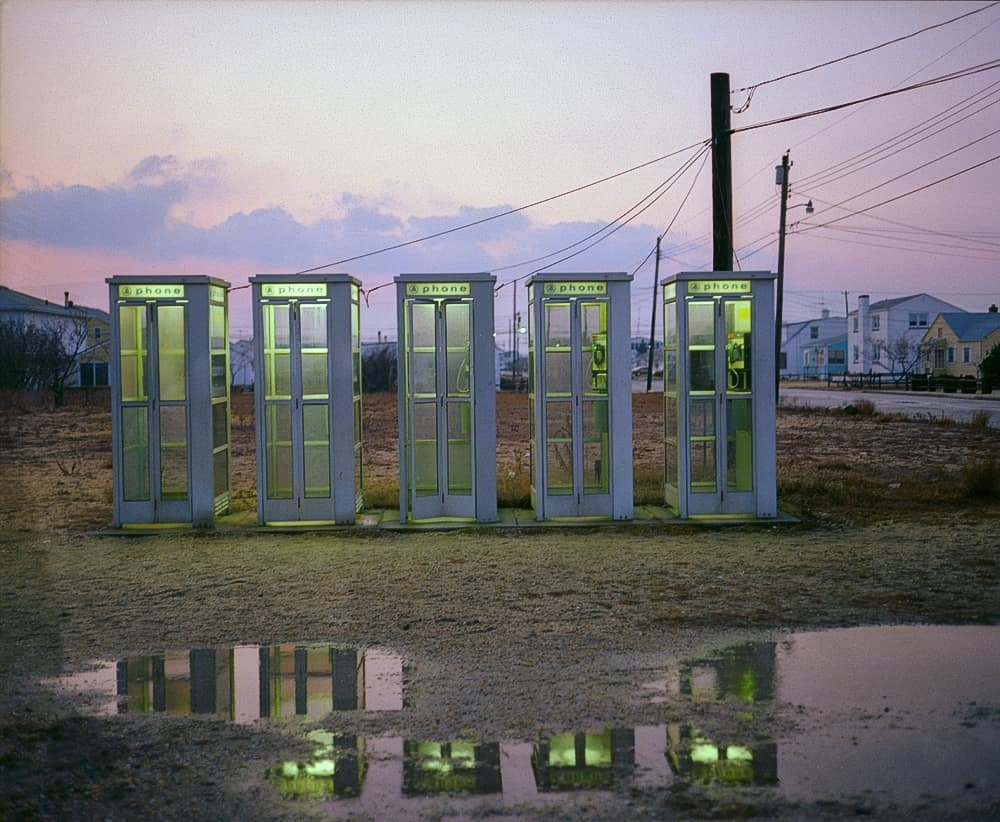
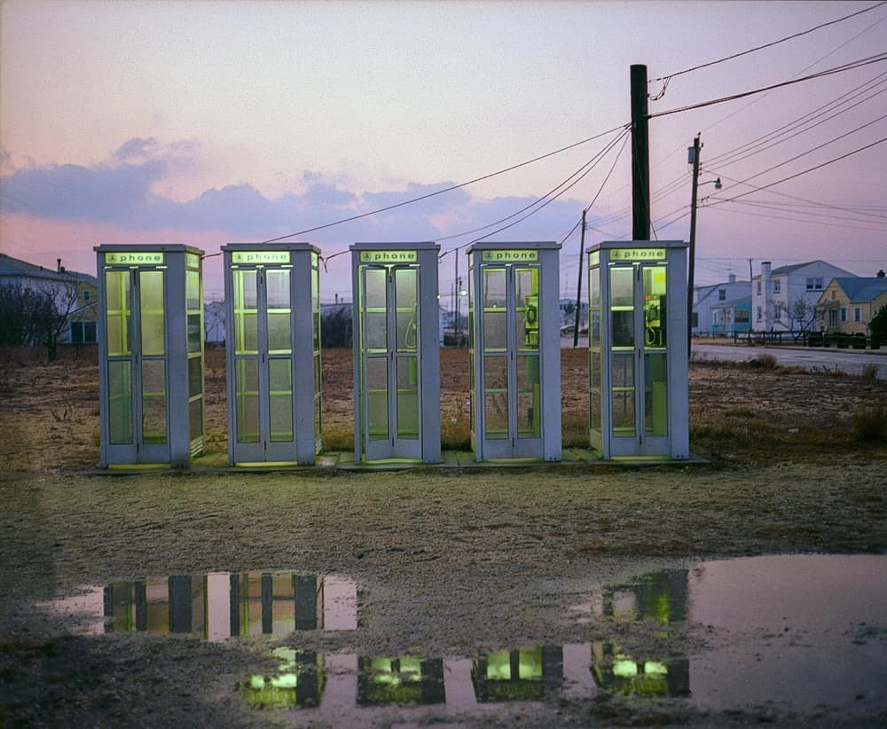

First of a Thousand
When I began this project, I was in the midst of a burnout. It ended up taking me several days to figure out what my idea even was before I began this project. During that time, I went through many, many designs. The first major one I had was to implement a 3D object on the center of the page and have it always face towards the cursor. I had found some online websites like such, mostly spheres, that would react to the movement of the cursor. When considering what object I should use, I decided that I would do a set of dentures. Moreover, by clicking on the individual teeth, a tab would open of an assigned link. While the thought of reinstalling and dealing with Maya2020 was horrifying enough on its own, what stopped me from pursuing this idea was the fact that I did not have enough time to risk on the rendering time it would take to export a model, nor it’s leisurely animation.
Image Source
More Inspiration
While that plan fell through, the one thing that I decided to stick with was creating an image map. So, I went out searching for more inspiration. I realized that I really wanted to do a light on dark color scheme, since all my previous ones had a very pale, or white background. I knew I wanted to create my own images, although I wasn’t sure what exactly they would depict. I also didn’t want to do anything overly minimalistic.
 

Image Source
Image Source
Image Source
Image Source
The Idea
Still, I had nothing. I was trying to work faster each day, I still had to figure out what categories I could split my links into, and how to split an objects into those groups through the image map. It was at this point that I realized I had 5 main categories and my hand had five fingers. I saw it to be fitting, after all, I programmed most of my code with that hand. I decided to create an image of my hand and display it at the bottom of the page reaching upwards at a circle outline that would transform into a larger shape containing my content and links. So I began to work.
Process
I drew a base image of my open hand, and five additional ones, for each bent finger. I figured out the coordinates for the image map and inputted the information into my html file. Moreover, when a finger is clicked, the picture changes accordingly so that the finger appears bent. I animated the circle to visually expand and become more rectangular. By the end, the page felt too empty, so I decided to add a particle library that would not only allow for the user to interact with them, but they would fall gently on their own.
Problems
I ran into a few problems while coding. First, the resizing map library did not work when I had to replace the base image with the finger bent ones. Whether I would remove and prepend the base image, or changed the css displays through jquery, once the window was resized before the container was closed, it wouldn’t work. I fixed this by hiding the base image with a separate larger picture matching the background color by prepending and removing it instead. There were also a lot of problems with the grid in the container, so I separated it into two separate grids side by side. Those were the biggest problems I encountered, the others were more of a hassle than anything, like prepending html information through jquery.
Final Thoughts
All in all, I enjoyed creating this index just as I enjoyed doing this course.